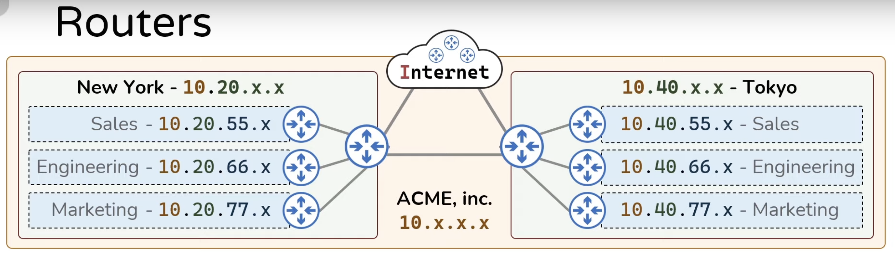

Updated ( 2018-09-01 / 2019-03-11 / 2020-02-20 / 2024-01-14)
IP and MAC Addresses (IPv4 and IPv6)>
Routing Traffic on the Network>
CORS Protocol (Cross Origin Resource Sharing)>
| Layer | Description |
|---|---|
| 7 - Application |
- interface on which the user interacts, network application used by the user (Web Browser, Outlook, Skype,
ect..) - communication protocols reside here as well (HTTP, FTP, etc...) |
| 6 - Presentation | - data translator (SSL, data translation, compression, encryption/decryption, ect...) |
| 5 - Session | - open/closes and manages a communication session (ex: in HTTP we use cookies) |
| 4 - Transport | - (service-to-service) delivery (TCP ports, UDP Ports (protocols have their own ports) |
| 3 - Network | - (end-to-end) data routing on the network (logical addressing, IP address) |
| 2 - Data Link |
- (hop-to-hop) transfering data between adjacent network nodes (physical addressing, MAC address) - a hop is considered devices which perform routing (a switch, hub, bridge, repeater or firewall is not considered as a hop) |
| 1 - Hardware | - hardware itself (Network adapter, cable, ect...) |
| URL |
|---|
|
protocol: - Transmission protocol (like: http) - multiple subdomains are allowed - site path (on the server) - data included in URL - SYNTAX: key=value&key=value - identifies a part of the HTML document |
check domain records (dnschecker.org)
Network Concepts: [link]
- the OSI model is a conceptual model which characterizes and standardizes how telecommunication systems should work
- defines 7 conceptual layers, these layers do not refer to a specific structure or technology but rather they describe a function at the specified level
- the layer order defines the steps how the user sends or receives data through the network, on top (Application layer) is the user side and on the bottom (Hardware layer) is the hardware side
| IP Type | Description | IPv4 | IPv6 |
|---|---|---|---|
| Unicast | - data sent to one specified destination | YES | YES |
| Anycast | - data is sent to the closest destination only (multiple destinations are specified) | NO | YES |
| Multicast | - data is sent to multiple specified destinataions | YES | YES |
| Broadcast | - data is sent to all nodes on the network | YES | NO |

- the internet is basically a buch or router that routes the traffic between private networks (routers are in hierarchy)
- a host need 4 thing in order to communicate on the internet (IP address, Subnet Mask, Gateway IP address and DNS Server IP address)
